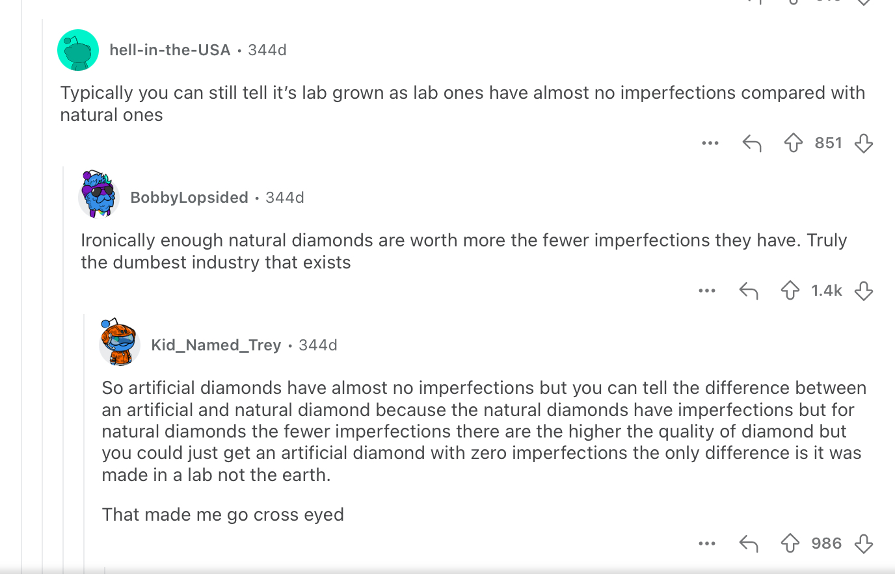

How are lab diamonds made?
Synthetic diamonds are made by placing a small diamond "seed" under a specialized chamber with carbon-based diamond growing materials. Then the machines will simulate and expedite the growth conditions of diamonds in nature to crystalize more diamond around the seed. Currently, there are two main methods: High Pressure High Temperature (HPHT) and Chemical Vapour Deposition (CVD). Both produce diamonds chemically, physically and optically identical to natural diamonds, with extended controls over diamond qualities - like size, colour, clarity.
HPHT process
This is the original method developed in the 1950s. The diamond seed along with the carbon materials are subjected to extremely high pressure and temperature — up to 1600°C and 1.5 million PSI to simulate the natural diamond forming conditions underground. The carbon materials melt and form diamond around the seed.
CVD process
With this newer method, the seed along with carbon materials are sealed in a chamber and then ionized into plasma. The materials are then deposited onto the seed. This works like the sugar crystal growing experiment done in science class. A seed is immersed in a super-saturated environment and materials grow around it.
| Natural Diamonds | Lab-grown Diamonds | |
|---|---|---|
| Chemical properties | Carbon | Carbon |
| Crystal structure | Cubic | Cubic |
| Mohs hardness | 10 | 10 |
| Refractive index | 2.42 | 2.42 |
| Place of origin | Under the Earth's crust | Diamond Laboratory |
| Time to form | Millions of years | 6–10 weeks |
| Ethical considerations | Mostly conflict-free | Always conflict-free |
| Price | $$$$$ | $$$ |
Lab Diamonds Gallery
"Heh... I can tell it's lab grown, it's FAKEEE!! ☝🤓"
For the naked eye, simply put, you can't. You just can't.
For professional jewellers, sure they can tell, but not for reasons you'd think. The reason is because lab diamonds are too perfect. Natural diamonds have imperfections: impurities, inclusions in the diamond crystal lattice, and since lab diamonds are created in a total controlled environment, these variables are eliminated. That's right, lab diamonds are too perfect to be true, adding more to the absurdity of the diamond industry.
This discourse on Reddit pretty much sums it up:
If they're the exact same and 99.9 percent of people can't tell, why pay a hefty price for a natural diamond when you can spare yourself some money and your conscience knowing slave labour didn't go into digging this off the Earth for your own joy?
Blood Diamond
Most diamonds are mined in Africa, some in regions with the lowest standards of living and highest human right violations in the world. These issues were notorious during the last century, where these countries saw brutal civil wars, violence, bloodshed and relentless human suffering. With massive demands for luxury jewellery in the West, coupled with De Beers lack-luster transparency and near-total monopoly, these created the conditions for the rise of these conflict diamonds. Armed forces exploited and enslaved people to mine diamonds to sell to the international market (at the time dominated by De Beers) and turned profits to fund civil wars.
It is important to note that De Beers did not directly cause nor endorse any violence in the diamond mining industry. However, the company's foundations in colonial-era South Africa benefited significantly from the exploitation of African labour, and its monopolistic practices and opaque policy making created grounds for these conflicts to thrive.
At the turn of the century, the United Nations regrouped and voted to establish the Kimberly Process, a certification scheme to prevent conflict diamonds to enter the market. This was a significant step forward. Combined with the easing of civil wars, it significantly lowered the percentage of blood diamonds in the trade, dropping from up to 15 percent in the 1990s to less than 1 percent in the 2010s.
However, some Human Rights organizations have criticized the effectiveness of this measure, concerning over its methodology and legitimacy and citing the statistics provided were meaningless. Investigative journalism pointed out that the leaders of some countries participating in the process continued to exploit their citizens while pocketing the profits, denying miners basic rights and protections.
In the modern days, diamonds mined through conflicts have significantly dropped, but there is absolutely no guarantee every natural diamond is conflict-free. The only way to be certain a diamond doiesn't contribute to conflict and exploitation is through the purchase of a lab one. This is arguably the most civil act a lover of this gemstone could make.